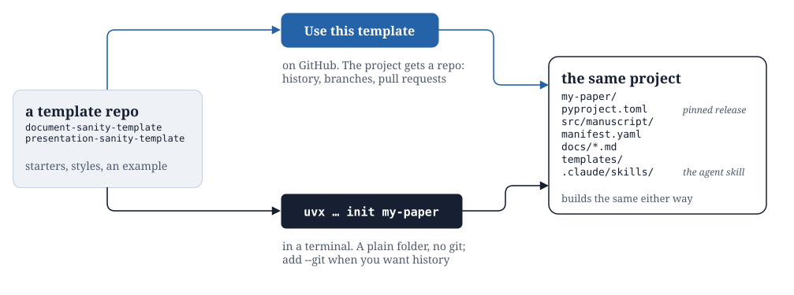
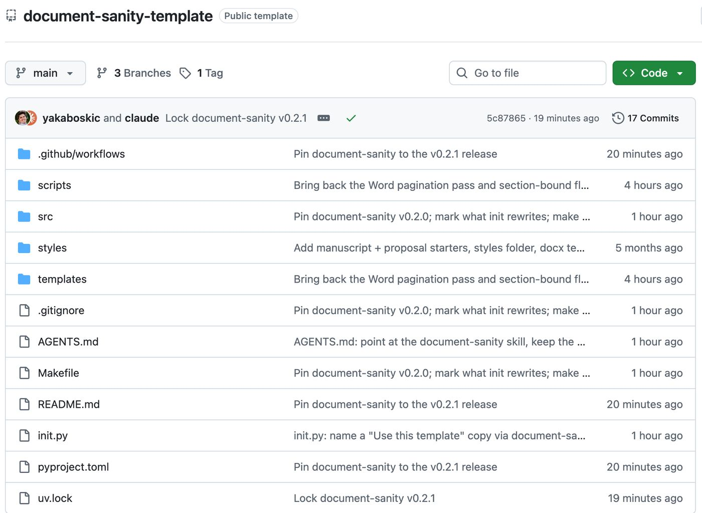
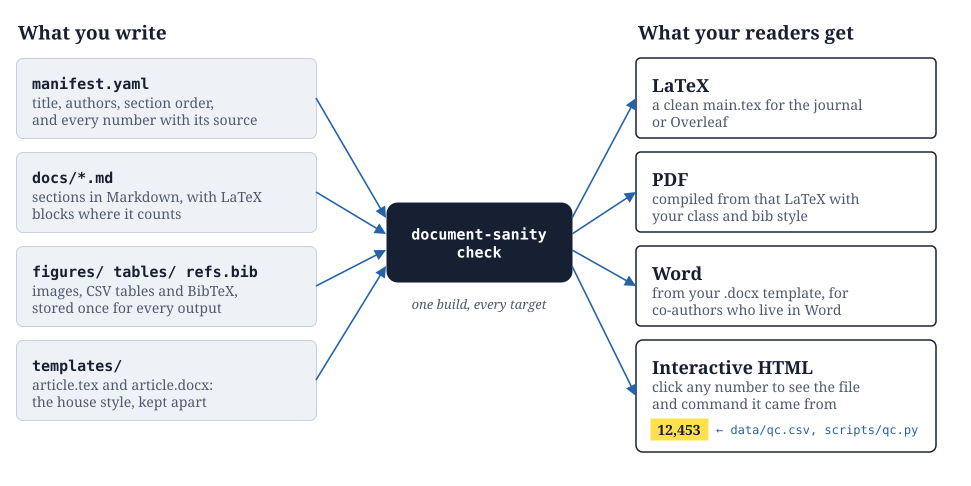
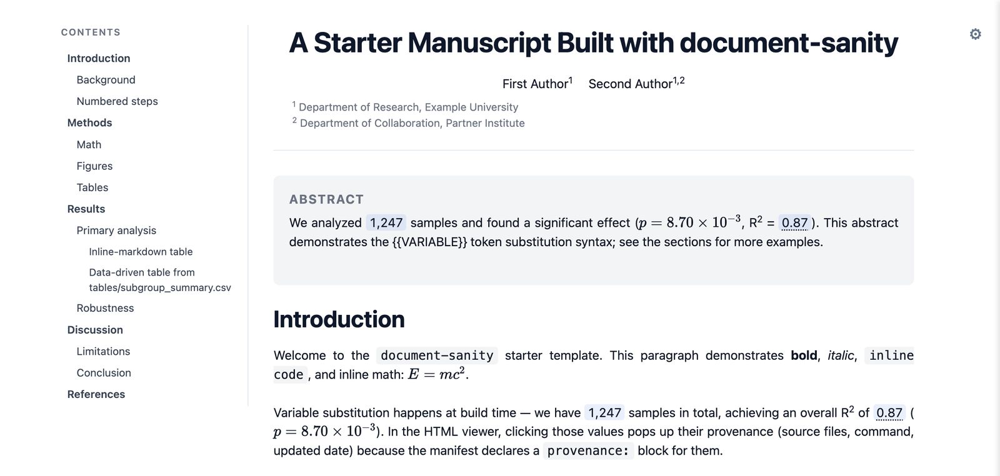
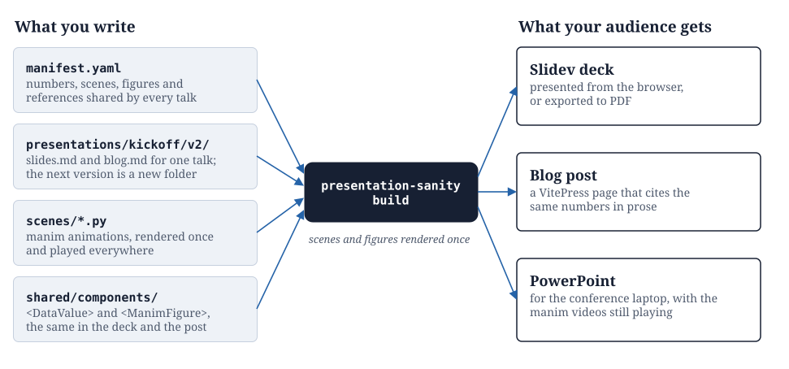
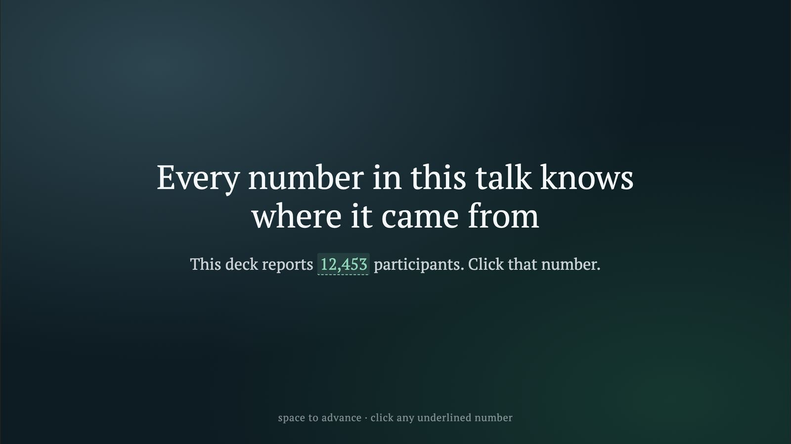
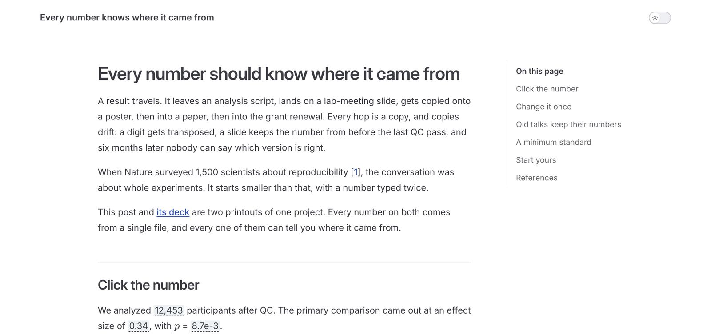

Built for autists to communicate their work, sanely.
Autistic on the inside: one manifest, and every number traced to the script that made it. Sanitistic on the outside: a paper, a deck or a Word file your co-authors can simply read.
manifest.yaml, six outputs. Edit it once and every output follows, because none of them holds a copy.Two ways in
Keep a whole project area in one repo, or just get a folder. Either way you end up with the same project: pinned to a release, ready to build, with an agent skill that already knows the conventions.

Scroll the figure sideways to see all of it.
Keep it in git
A repo per project area keeps every proposal, paper and talk about it together, reusing the same figures and numbers. Open a template, click Use this template, and name your repo.

Just give me a folder
No repo, no history, nothing to fork. One command copies the template into a new folder, so you can start writing. Add --git if you change your mind. It needs uv.
$ uvx --from git+https://github.com/yakaboskic/document-sanity \ document-sanity init my-paper → my-paper (from document-sanity-template@63537ec) 59 files written documents: src/manuscript/, src/proposal/ agent skill: .claude/skills/document-sanity/ next: cd my-paper uv sync # commit the uv.lock it writes uv run document-sanity check # every target, before you share
That run wrote files. For a set of talks, run the same command with presentation-sanity in place of document-sanity.
What goes in, what comes out
You write plain text that diffs well. The tools print it, and the prose and the numbers never drift apart, because there is only one copy of each.
document-sanity
For papers, proposals and reports. Markdown and one manifest.yaml become LaTeX, a PDF, a Word document from your own template, and an interactive HTML page where every number opens its provenance.

Scroll the figure sideways to see all of it.

presentation-sanity
For talks, and the blog post that goes with each one. A project holds every talk you give about it; a new version of a talk is a new folder, and all of them share the same numbers, figures and manim scenes.

Scroll the figure sideways to see all of it.


House rules
Written the way everything else is: once, in YAML.
# sanitism.yaml principles: one_manifest: everything else is generated, never hand-edited every_number_has_a_source: the file, command and date travel with the value versions_are_folders: not branches, and not final_v3_REAL.docx one_repo_per_obsession: papers, proposals and talks share figures and numbers same_input_same_output: a rebuild never surprises your co-authors
Your agent knows the rules too
init installs a skill for Claude Code and other coding agents, so you can ask for the work instead of looking up flags.
/document-sanity onboardTurn a folder of Word files, PDFs and CSVs into a new document./document-sanity checkBuild every output and catch broken references before you share./presentation-sanity newStart the next version of a talk as a new folder./presentation-sanity deployPublish to GitHub Pages, after confirming the work is meant to be public.